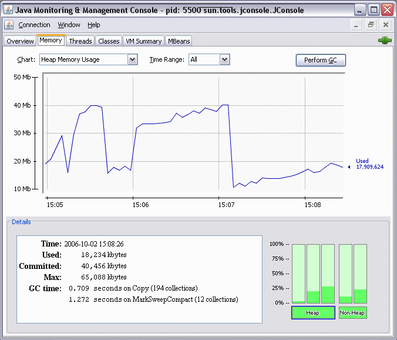

Another useful tool included in the JDK download is the JConsole monitoring tool. This tool is compliant with JMX. The tool uses the built-in JMX instrumentation in the JVM to provide information about the performance and resource consumption of running applications. Although the tool is included in the JDK download, it can also be used to monitor and manage applications deployed with the JRE.
The JConsole tool can attach to any Java application in order to display useful information such as thread usage, memory consumption, and details about class loading, runtime compilation, and the operating system.
This output helps with high-level diagnosis of problems such as memory leaks, excessive class loading, and running threads. It can also be useful for tuning and heap sizing.
In addition to monitoring, JConsole can be used to dynamically change several parameters in the running system. For example, the setting of the -verbose:gc option can be changed so that garbage collection trace output can be dynamically enabled or disabled for a running application.
For more details, see the jconsole command man page. For FAQs, see JConsole and Remote Management of Java Platform.
The following sections describe troubleshooting techniques with JConsole tool.
The following list provides an idea of the data that can be monitored using the JConsole tool. Each heading corresponds to a tab pane in the tool. For details on how to use JConsole tool, see Using JConsole.
Overview
This pane displays graphs showing heap memory usage, number of threads, number of classes, and CPU usage over time. This overview allows you to visualize the activity of several resources at once.
Memory
For a selected memory area (heap, non-heap, various memory pools):
Graph showing memory usage over time
Current memory size
Amount of committed memory
Maximum memory size
Garbage collector information, including the number of collections performed, and the total time spent performing garbage collection
Graph showing percentage of heap and non-heap memory currently used
In addition, on this pane you can request garbage collection to be performed.
Threads
Graph showing thread usage over time.
Live threads: Current number of live threads.
Peak: Highest number of live threads since the JVM started.
For a selected thread, the name, state, and stack trace, as well as, for a blocked thread, the synchronizer that the thread is waiting to acquire, and the thread owning the lock.
The Deadlock Detection button sends a request to the target application to perform deadlock detection and displays each deadlock cycle in a separate tab.
Classes
Graph showing the number of loaded classes over time
Number of classes currently loaded into memory
Total number of classes loaded into memory since the JVM started, including those subsequently unloaded
Total number of classes unloaded from memory since the JVM started
VM Summary
General information, such as the JConsole connection data, uptime for the JVM, CPU time consumed by the JVM, complier name, and total compile time, and so on.
Thread and class summary information
Memory and garbage collection information, including number of objects pending finalization, and so on
Information about the operating system, including physical characteristics, the amount of virtual memory for the running process, and swap space
Information about the JVM itself, such as arguments, and class path
MBeans
This pane displays a tree structure showing all platform and application MBeans that are registered in the connected JMX agent. When you select an MBean in the tree, its attributes, operations, notifications, and other information are displayed.
You can invoke operations, if any. For example, the operation dumpHeap for the HotSpotDiagnostic MBean, which is in the com.sun.management domain, performs a heap dump. The input parameter for this operation is the pathname of the heap dump file on the machine where the target VM is running.
You can set the value of writable attributes. For example, you can set, unset, or change the value of certain VM flags by invoking the setVMOption operation of the HotSpotDiagnostic MBean. The flags are indicated by the list of values of the DiagnosticOptions attribute.
You can subscribe to notifications, if any, by using the Subscribe and Unsubscribe buttons.
JConsole can monitor both local applications and remote applications. If you start the tool with an argument specifying a JMX agent to connect to, then the tool will automatically start monitoring the specified application.
To monitor a local application, execute the command jconsole pid, where pid is the process ID of the application.
To monitor a remote application, execute the command jconsole hostname:portnumber, where hostname is the name of the host running the application, and portnumber is the port number you specified when you enabled the JMX agent.
If you execute the jconsole command without arguments, the tool will start by displaying the New Connection window, where you specify the local or remote process to be monitored. You can connect to a different host at any time by using the Connection menu.
With the latest JDK releases, no option is necessary when starting the application to be monitored.
As an example of the output of the monitoring tool, Figure 2-15 shows a chart of heap memory usage.
For more details on the monitoring and management capabilities, and how to use jconsole, see the Java SE Monitoring and Management Guide.
Figure 2-15 Sample Output from JConsole
